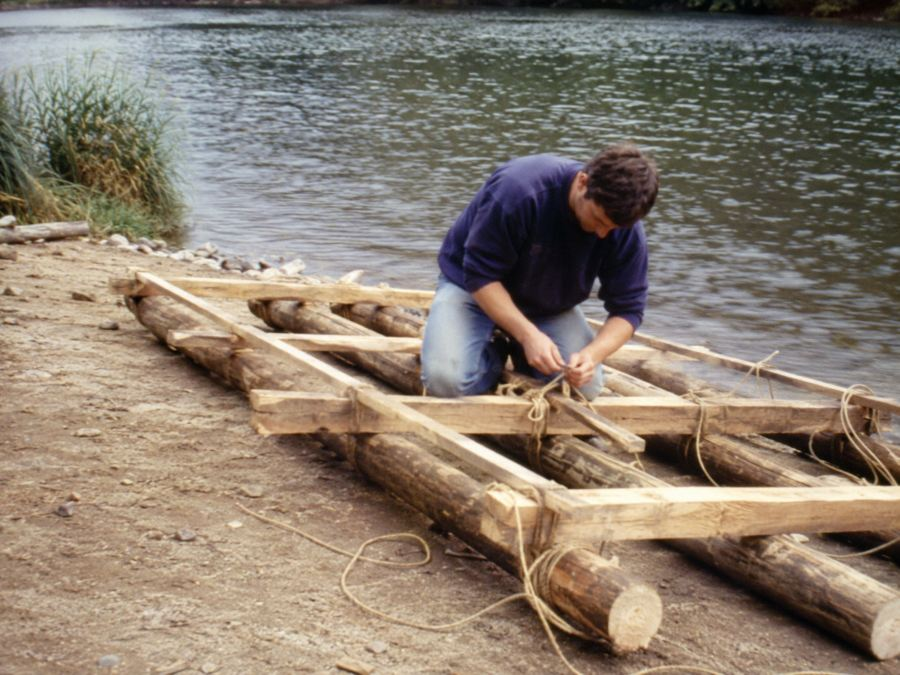
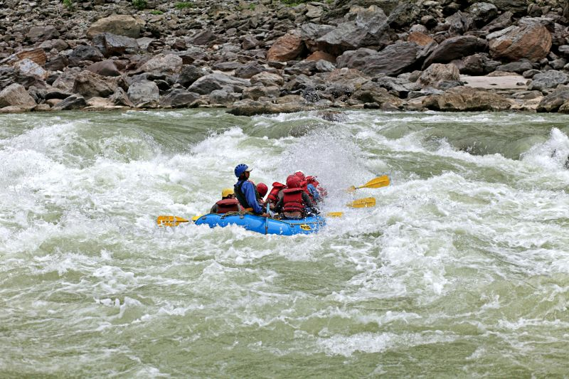
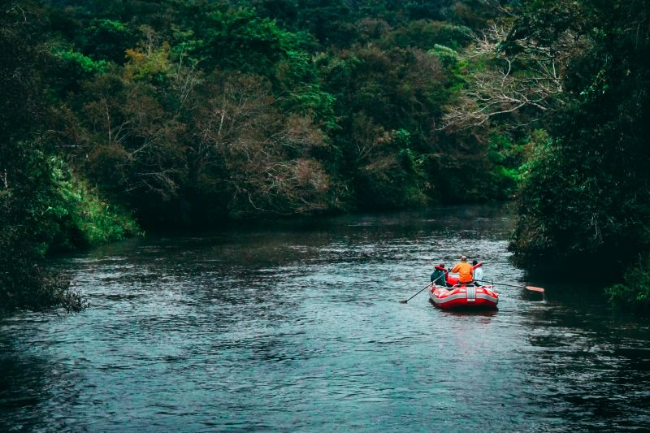
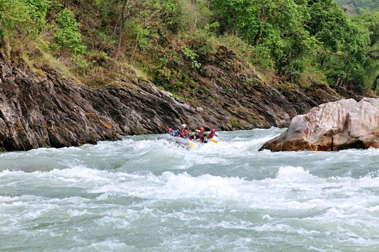
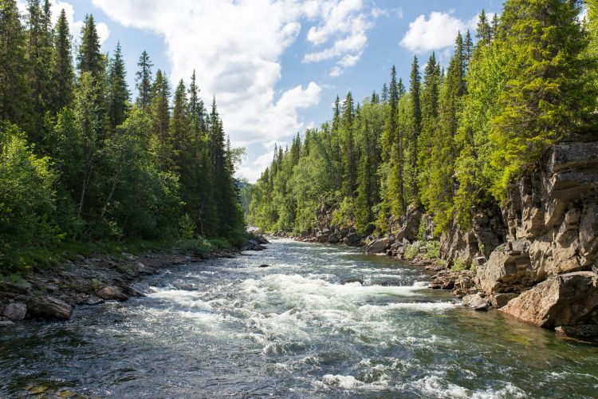
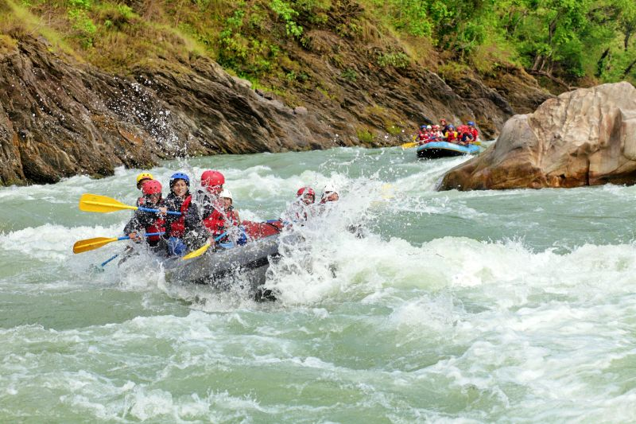

The purpose of Rafting Travel is to give our customers the best of experiences, so they can always remember, even after decades, the amazing vacations they spent on the white waters.

The purpose of Rafting Travel is to give our customers the best of experiences, so they can always remember, even after decades, the amazing vacations they spent on the white waters.
It all began in 1995 when our grandpa built his firts raft for himself. Next year he built a second one for other family members and friends. Some time later other people asked him if he rented his rafts and...

What started as a small family project soon became a local tradition. More people joined the trips, and our grandfather began teaching others how to build rafts and navigate the river safely. Over the years, the business grew, but it has always kept the same spirit of adventure, friendship, and respect for nature.




